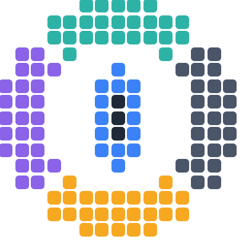
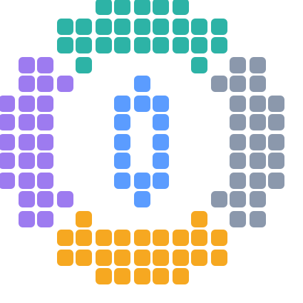

You can create your run with any emulator and any tools you like; you only need to submit the encoded video. Below are the TAS tools commonly used.


Chimera is our recommended tool for TASing.
| Systems | Core |
|---|---|
| NES | quickerNES, QuickerNesHawk |
| SNES | Snes9x |
| GameCube, Wii | Dolphin |
| Mega Drive/Genesis, Sega CD, Master System, Game Gear, SG-1000 | Genesis Plus GX |
| Dreamcast | Flycast |
| PlayStation 2 | PCSX2 |
| PlayStation Portable | PPSSPP |
| PlayStation 3 | RPCS3 |
| Xbox | xemu |
| 3DO | Opera |
| Atari 2600 | Stella |
| MS-DOS, Windows 3.1/95/98 | DOSBox-X |
| Flash | Ruffle |
Chimera is a derivative work of BizHawk, under the same MIT license and with full credit to its developers.
A high-performance botting engine for routing and solving games by massive state-space search. Source on GitHub.
A botting external tool for BizHawk, searching inputs from inside the emulator itself, by toca. Source on GitHub.
These are emulators capable of running many different games. You can attach their movie files to your submission as supplementary data beside your run video; for most of these formats we extract the relevant information (time, frames, rerecords) directly from the file.
| Emulator | Systems | Movie format | Parsed |
|---|---|---|---|
| {{ e.name }} | {{ e.systems }} | {{ e.formats }} |
✓ |
The rerecording emulators of an earlier era. Their movies are read in full (time, frames, rerecords), so a historical work arrives here with its record intact.
| Emulator | Systems | Movie format | Parsed |
|---|---|---|---|
| {{ e.name }} | {{ e.systems }} | {{ e.formats }} |
✓ |
These tools create tool-assisted runs inside one game or engine, with no emulator involved. You can attach their input or replay files to your submission as supplementary data beside your run video; for some of these formats we extract the relevant information (time, frames, rerecords) directly from the file, marked below.
| Tool | Game / engine | Movie format | Parsed |
|---|---|---|---|
| {{ t.name }} | {{ t.game }} | {{ t.format }} |
{% if t.parsed %}✓{% else %}—{% endif %} |